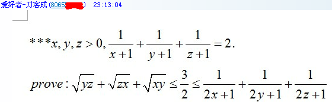

[不等式] 人教群里看到的典型换元法换出来的不等式

(45.28 KB)
2013-2-18 23:50
PS、其实我前几天好像在哪里见过这道题，不过当时没怎么看，所以也不记得是谁命的题，不过应该不是刀客编的。
先作换元 $1/(x+1)=a \iff x=1/a-1$ 等，则 $a$, $b$, $c\in(0,1)$ 且 $a+b+c=2$，代入不等式右边并齐次化后就是极为熟悉的 Nessbit 不等式。
注意到由 $0<a$, $b$, $c<1$ 且 $a+b+c=2$ 易得 $a+b>c$ 等等，可见 $a$, $b$, $c$ 构成三角形，于是再令 $a=t+u$, $b=u+v$, $c=v+t$, $t$, $u$, $v>0$，则 $t+u+v=1$，代入左边的不等式并齐次化，等价于
\[\sum\sqrt{\frac{tu}{(u+v)(v+t)}}\leqslant\frac32,\]
这时用均值已经显然成立，不过若是了解内切圆代换，也可以知道上式其实也等价于极为熟悉的三角形不等式
\[\sum\sin\frac A2\leqslant\frac32.\]
这样你应该能知道这题是怎么编制的了。
|

 发表于 2013-2-18 23:50
发表于 2013-2-18 23:50